- Resource: Github CodeTalk for questions
- 94% of graduates go on to get Developer Jobs
- Keep a vision of the overall Roadmap
- Unit Objectives
- Compare & Contrast Front/Backend
- What you see & interact with/logic
- Define roles HTML, CSS, Javascript
- Noun, Adjective, Verb
- Unit Objectives
-
Write Properly structured HTML docs
- Boilerplate: html, tab
- Comments, Ctrl/
-
Write common closing/self-closing tags
- Basic element General Rule: < tagName> Some content < /tagName >
- For elements (created using tags) & attributes, search MDN reference for each
- Ordered (ol), Unordered lists (ul), wrap that around li (see this doc as an example)
- Exercise, recreate This Outline, see HTMLlistassignment for solution
- Div and span allow you to group content, generic container. Div is a block level element (like h1), span is inline (like ol)
- So Div will push things to the next line, span will not
- Bird's eye view: Elements, Tags, and Attributes
- Anatomy of an Element
- Anatomy of an Attribute

- Better anatomy of an Attribute
- img and a (anchor) tags
- img tags are self closing, use a src attribute
- anchor tags use an href attribute. You put the link text in between the opening & closing tag
- Recreate simple website based on provided photo
-
I did this instead
- For the code, see basicwebpageassignment.html
- This is the site to recreate
- Objectives
- Write Valid HTML Tables
- For table, tr is like ul (stands for table row) th and td are like li (th is for header row, td following rows)
- For better format, wrap with thead and tbody
-
Pokemon exercise vs what I did, (see Table Exercise.html for code) 
-
Write validated HTML Forms using these tags:( But first, here is what simple form code looks like, how these tags fit together:)
- < form>
-

- At this point just know that action and method exists-mehod is where the form data is being sent, method is the type of request. The two big ones are post and get. If you're google searching it's a get request, if you're filling out a form and sending it's a post request.
-
- < input >
- < label >
- allow us to add captions to individual elements in a form
- There are 2 syntaxes, one where the input is inside the label tag, and the other with a 'for' and 'id'
- See here for code (or labelsexample.html). Notice that you can nest the input inside the label, or create the label with a for attribute that you then assign to the input with an id attribute.
- and write simple validations
- ability to enforce rules and structure
- For example, you can't leave your password blank
- 2 examples: Just add the 'required' tag to your text input, and then you can't leave it blank
- Other example, add required attribute to email tag. Not only do you have to fill it out, you also have to do it in email formatting with an @ sign.
- See Simplevalidations.html for code. Notice the email input and the password input, we added the required attribute to both.
-
And understand radios and dropdowns
- Here are the basics of name and value attributes and how they interact, ad how it allows you to link the 2 radio buttons so that only one can be chosen.
- See radiodropdown.html for code.
- < form>
- Recreate Complex Form
- Create this form
- Validations Required: First name, last name, email
- Bonus: password must be between 5 and 10 characters long (new type of validation you haven't learned)
- See Complexformexercise.html for code.
- Unit Objectives
-
Define the "General Rule" CSS
- Correctly include CSS in your HTML files
- It's just a link tag to a separate css file
- Put the link tag to your css style sheet in the head
-
Select elements by tag name, class, and ID
- BROADEST: First you have the element selector, it's the broadest. You're selecting the type of a tag (div, li, body, etc)
- NARROWEST: include an ID hook in your html, and you can select that one specific instance of that tag, it can only appear on the page one time.
- MIDDLE: Class selector is like ID, but you can broaden it to include more than one
-

-
IN SUMMARY: (These 3 images of the to do list go together) 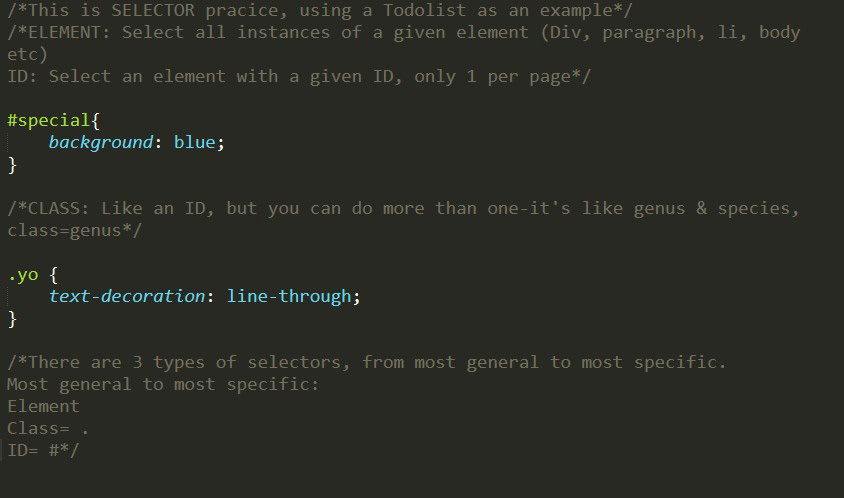 
-
......Will give you this. Tada!

-
Style elements with basic properties like color and background
-
Color
- Resources:
- pLACEHOLDER
- Placeholder
-
Two main types: Hexadecimal and RGB
-
Hexadecimal
- With normal decimal it is base 10, we have 10 choices for each slot (0-9). With Hexadecimal you have 16.
- # _ _ _ _ _ _ Logic=Red: Green: Blue
- So the first 2 determine how much red, and so on
- #FFFFFF=White, it's like light
-
RBG
-

- Still in base 10
- Look at the examples: each one corresponds to how much red, green and blue. So in the first it's green full blast at 255.
- Similar to hexadecimal, it's based on light-so full blast (255, 255, 255) will give you white.
- rgba will be exactly the same, except the 4th chanel ranges from 0.0-1.0, it controls transparancy. 1 is opaque. .2 is much more transparent than .6.
-
-
Hexadecimal
-
Background and Border
-
Background
- color and background are 2 properties, but with background you can put an image in, not just a color
- Just throw the url in instead of a color
- It'll usually tile it; to prevent use the background-repeat: no repeat;
- To get it to stretch out use background-size: cover;
-
Border
- Each border has 3 pieces, and won't work without all 3: width, color, style
- You can do each separately, but the shortuct syntax is better, it specifies width, style, and color in 1 line.
-
Background
-
Color
-
Use Chrome CCS Inspector to debug HTML and CSS
- Super handy for testing stuff out, you can change things without editing the doc, and only put it in if you want it.
- It's also great for seeing how other people did things.
-
Exercise: CSS Selector Scavenger Hunt
- Handy list of Selectors
- Example, if you use * it will select every element on the page
- Here is a list of a few cool selectors besides element, class, and id:
- Inheritance and Specificity, Cascade
- If you set a property on a parent, it can affect the child
- The child's going to listen to the most specific property set on it
- If you have multiple styles targeting one element, the highest specificity (least general) will win
- Specificity calculator, MDN articleand if you want to get more specific (lol):
- Selector Scavenger Hunt handy list of selector examples, See SelectorsExercise.html and selectorcise.css for code
- Here are the different problems piece by piece
-
- Simple element selector, you're just selecting the body tag
-
- Again, simple element, all h1s
-
- Simple element
-
- Simple element, had to use color picker to find a color
-
- Element selector, simple color background
-
- Element selector, more complex border property
- Note the order of the syntax: width, style, color
-
- Class selectors! .whatevertheclass is, in this case .hello
- And to get an all white backround you use the color #FFFFFF
-
- Id selector! #
-
- Descendent selector! This selects a nested element. And font-size property
-
- Attribute selector! You put the tag and then racket the attribute
-
- nth of type-this one's a little tricky. First you had to figure out that it was a descendent thing: p is the nested eleent. Once you knew that it was easy to do a nth of type for div.
-
- Another nth of type brain twister
-
- I had to think about this-em is just an element tag. It's the only one in there, so we didn't have to get fancy. Em italicizes (emphasizes) things
-
- I had to go find this one on a different website
- So it's one pice attribute seector, followed by checked
-
- Text transform property can chhange everything to uppercase
-
- This was another you had to dig up
- You use it to style fragments of an element, like first letter in this case.
-
- Another look up, changing something when it's hovered over
-
- When something's visited, change it (usually color)
- Unit Objectives
-
Manipulae common font and text properties using CSS
-
Basics of fonts
- Use font-family to change the font of something
- Change the size with font-size
- Em is a relative font size
- Most people set a body font size in px (like 10px), and then use em for the rest
- font weight is how thick the lines are
- line height does spacing, it multplies by the current spacing on the font (larger fonts=larger spacing)
- To center something (or align right, left), use text-align
- text decoration lets you do things like underline, strikethrough
- If you want this code, see fonts.html and fonts.css
-
Basics of fonts
-
Include external fonts using Google fonts
-
Google Fonts
- Go to fonts.google.com
- Find the font you want, select it in regular 400, and copy the embed link
- Then just copy the embed link into the head of your html!
- In the link, see what family=, that's what you'll use in your CSS:
-
Google Fonts
-
Define and manipulate the four components of th Box Model
- Box model is the concept that every element is surrounded by a box, and it as 4 edges: margin, border, pading, and content
- From this diagram, you can see that content is the element, padding is the space between the element and the border, the border is the border, and the margin is what's around the border.
- So if you wanted to space things out, you'd normally use margin
-
-
4 part box demo, see Boxes.html and boxes.css for code
-
Border
- This is the base code with no styling: 2 bland paragraphs
- Now let's look at the border, let's give the paragraphs a solid blue border
- Notice that the content goes all the way across the screen. To change a width we'd change the content.
-
Content
- Content changes width and height, here we'll change the width
- We can also change the height
- We can also do width and height in %! It's the % of the parent element
- This is really cool because then it makes things responsive as you change window size
-
Padding
- Padding is between the content and the border
- You don't have to do it all around, you can just do it on the left
-
Margin
- Space on the outside of the border, between elements
- It looks similar to padding
- Just like border we can consolidate the syntax: Top, right, bottom, left (clockwise)
- You can also use auto, it centers things for us
-

- The second line is shorthand: this will make the top and right 0, auto, and bottom left 0, auto
-
Border
- Recap: content=blue, padding=green, border=blue, margin=orange
- 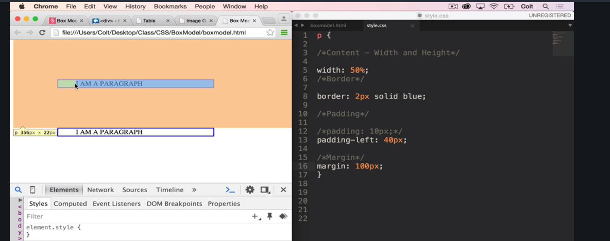
-
Tic Tac Toe Board Project
-
- If you want the code, see "ticsol.html" and ticsol.css
- Basically, you created a table & figured out that the horizontal boxes needed a top and bottom border, and the vertical left and right. In addition the table and heading needed to be centered, and the width of the boxes trimmed down (otherwise it'd cover the whole page), and it neeed to be square.
-
-
Image Gallery Portfolio site Project
- Images and divs are block level elements (they take up a whole line), by default. To change this we need to use the float property. If you do float-left, it's like the gravity's gone out of your document, and the next element will float up and push left against the preceding. It also gets rid of the weird white space that html automatically adds between photos.
- Here's the code along. First we added a bunch of images into html. In CSS the first thing was figuring out the spacing. HTML auto adds weird white space, so we did float left to get rid of that so we can add our own.
- From there we went with width of 30% (3 photos per line)
- To figure out the margin, we did some math. We counted up how many margin sides went across. It was 6, 1 on either side of each photo. We knew that we had 10% left after the 3 30s, so we just divided 10 by 6 to get 1.66.
-
- From there you just changed the header text, easy, and added a border on the bottom as a nice line. Notice that you put it in line by using the same %s as the photos, they correspond. Pretty cool!
- And here's what it looks like!
-

- If you want the code, see "photogrid.html" and photogrid.css
-
Minimalist Blog Site Exercise
- Here's what we're going for
- 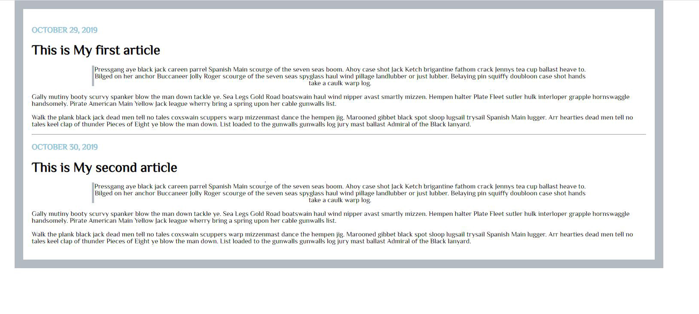
- Here's how we got there!
- You created the basic html format, a div box article, and then within an h3 with a date class, an h1 heading, and 3 paragraphs. The first paragraph has an indent class
-
- From there it was just a matter of styling. First you got the body how you wanted it, with a border, taking up 80% of the page, centered, and some padding to widen it a bit YOu changed the body font too. Then it was just a matter of styling your calsses, the date and the indent paragraph. The date yo changed to uppercase. The indent paragraph you gave it a left border, you centered it, and had it be 80% width of parent, and centered it too
- Last note, you put an hr tag, and there's a million ways to style one. Here's a link to one page, hr code examples
- You can find more in codepen, etc.
- You made it through Css! Woot Woot!
-
Unit Objectives
- Define Bootstrap and explain why we use it
- Include bootstrap locally and by using a CDN
- Use common Bootrap components like navs and buttons
- Build a layout using the Bootrap grid system
- Image Gallery Project
- Startup Landing Page Project
-
Unit Objectives
-
Evaluate JS using the developer console
- Super simple, just go to console in inspect element section
-
List the 5 JS primitives
- These vary in languages. In JS, 5 categories of data types: Numbers, Strings, Booleons, null, and undefined
-
Numbers
- 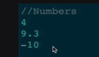
- JS doesn't care if i's whole or positive, really broad category
- Here's some stuff you can do in the console:
-
Strings
- Basically text
- enclosed in quotes
- If you put numbers in quotes, it'd be a string
- Here are some things you can do in the console
-

- You can add them, just like numbers. If you need double quotes within double quotes, you can 'break' it with a backslash. If you need a backslash the escape is a double backslash (lol).
- You can calculate the length of a string with .length property
- You can also access individual characters with brackets. The number inside the bracket will correspond to the positiion in the string of the character that we want, and spits out the character. If I want the first character i put [0] in brackets to get it (js starts counting at 0).
-
Booleons
- Only have 2 options, they're either true or false
-
Null
- This is just a value, there's only one (unlike the other 3 that have multiple options)
- Means explicitly nothing, unlike undefined where it's something that hasn't been defined yet
-
Undefined
- Like Null, it's just a value, there's only 1
- If we never set a variable, leave the container opened, it defaults to undefined, it just hasn't been defined yet-unlike null, where the value is explicitly nothing
- Quick Exercises
- This is the mod, the remainder operator. It'll divide 3 into 100. It goes evenly into 100 33 times, leaving 1 left over. So the answer will be
- -->1
- It will follow PEMDAS, so first it will add the parentheses to blahblah, and then find the 6th character (which is really the 7th, it's the 6th index, it starts at 0-if you put in 0 it would give you b), so the answer is
- -->a
- So it would be (5)% then the backslash escapes so it's only (3), 5%3 would be...
- -->2
-
Numbers
-
Define variabes with the var keyword
- Basic concept, a variable is a jar that we store some data in, and give the jar a name so we can refer to it later
- So we could have a variable of current login user, and that username could vary, but then you'd have certain things accessible to current login user, and logged out user
- Here is the basic syntax
- So var yourVariableName = yourValue;
- Here are some examples
- So if I put that firs bit of code into the js console
- And then put in the jar/box/container/variable name (however you want to think about it)
- ...it spits out what value (rusty) is currently assigned to the variable!
- You can also change the value contained in the variable, like this
- Now when you put in the variable container (name), it spits out the new assigned value (tater)
- Here are some more examples
- Basically, variables are jars or containers that store stuff. We can change the value of the stuff inside, we can even change types. For example, if you set your variable to 43, you could change it later to a string, "bob"
- Another note, variables are 'camel case' lol, where you write them where the firstword is lower case, next is upper squished against it.
- Really you use const and let more than var:
-
Here are the main differences between the two
-
Write code using console.log, alert, and prompt
- quick note: comments in js is //. Methods are pieces of code that come with js. Think of them as variables that contain js code that can be executed.
-
alert
- so you just type alert("put something here");
-
console.log
- this just prints something within the console
-
prompt
- This prompts the user to enter something
- So you're just putting prompt("something something");
- You can also store what a user says by storing a prompt in a variable
- Now whenever you put in 'username' it'll give you back what the user entered in the prompt box, 'rusty'
-
How to include JS files in your html
- Super easy, save separate file under "blahblah.js", link it in your html with a script tag
- Cool mini project, let's get it ask us our name, and then when we put it in have it say hi
- Here's the js code
-
That will give you
- Here's the code, includingjsfiles.html, "includingjs.js
- JS Stalker Exercise:
-

-
Here's the code and what it spits out in your console
- If you want the code, JS Stalker.html & JS Stalker.js
- Age Calculator Exercise
-

- Pretty simple
- If you want the code, Age Calculator.html and Age Calculator.js
-
alert
-
Making decisions and controlling the ways that our code runs
-
Evaluate complex logical expressions
- The base: true or false
- Here are comparison operators in a chart
- Notice there are 2 ways to check for equality/nonequality. double equals performs type coercian. Always use triple equal, it's more sepcific.
- Look at these examples
- In the first one a == spits back true, even though one's a number, one's a string
- In the second one the == equates undefined with null-two very different things!
- Basically ==tries to match up types and make it true, ===is more precise
- Here are some weird quirks of ==. True == the string 1 is true, but if you do any other string it's false
- Similarly, 0 =false is true
- And like we've seen before is null == undefined is true
- The weirdest one is that Nan (not a number) == Nan is false
- Moral of the story: use ===
- Logical Operators
- How do we chain together simpler boolean statements into more complex with multiple components? Logical operators. At the end of the day they're still going to evaluate to T/F, but there might be multiple pieces that evaluate to be T/F before the entire thing becomes T/F.
- There are 3 main logical operators: AND, OR, NOT
- AND requires that both sides be true for it to spit out true
- OR only requires that one side be true for the whole thing to be true
- NOT doesn't take sides. It flips the value of whatever we put in it. If it were true, now it's false.
- Every value in js is truthy or falsy, even if they're not explicity so. So they have an inherent truthy or falsiness to the
- Here we're testing the truthiness of these things
- Here's the general rule:
-

- The left side is false, the right true. It's an OR (||), so it will come out to true.
- This one's an AND && at heart. Let's start on the left, with the ||. The left is true, the right is false, so it comes to true. But there's a NOT ! in front of it, so it's actually false. Okay. That short circuits it really, we know its going to be false. But for practice: On the right we have another &&. ON the left that's false, so we know the whole thing will be, but just for it's own sake, the right is true. So the whole thing is false, but the the NOT changes it to true. So on the left overall we have false, and on the right we have true...so it's false.
- ((Now using the truthiness/falsiness concept))
- Let's see, overall we've got an && bounded by a !. Let's do the left. "" with no space, that would be falsy. A simple string would be truthy, so the left is true. ON the right it's the string false, which would really be truthy. So the whole thing is True! But then negated. So the answer is... false.
-
Exercises!
-
Write 3-part JS conditional statemenets
- 3 js key words:if, elseif, then
- Here's the logic we're trying to write:
- First let's do the if you're less than 18 you can't get in.
- The if keyword takes a single expression inside a parentheses that it evaluates to be true or false. If it evaluates to be true, whatever code we put in the curly braces will be executed. So here, this text will only run if the age is less than 18A
- Works the same way as if, but it follows an if statement. It's a secondary thing you check, but only after the first one. where if the expression inside evaluates to be true, code will run.
- Now this is actually a little redundant. This else if is only going to run if the first if returned true-the only way it could do that is if someone put in 19 or higher. So really we only need to put if less than 21.
- Else allows something to happen any other time. So if you're older than 18, and older than 21, this piece will run.
-
- Exercises!
- Answers:
- If you want the code, conditionalexercises.html and conditionalexercises.js
- Guessing Game: There's a set number, and as you enter the browswer will give you clues until you get it.
- Here's the solution
- Pretty cool, you defined a variable, and then had to make an adjustment because the user entered guess will come back as a string. From there you just did a 3 part logic thing to return 3 different messages.
- For code see game.html and game.js
-
Write JS while loops and for loops
- Intro to loops: Repeating things!
-
Understand the purpose of loops
- 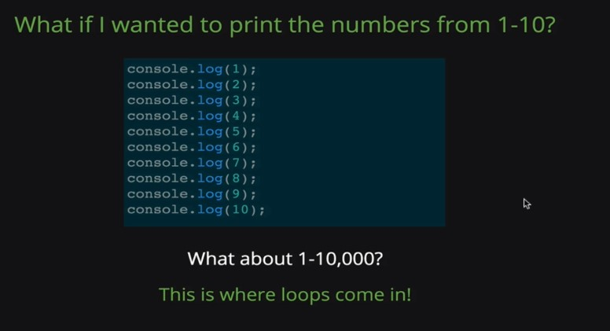
-
Define "DRY" code: don't repeat yourself!
- Loops are a fundamental tool we use to dry up our code.
-
Write simple while loops
- Similar to an if statement, where if the condition is true, it will run the code. But with a loop it will keep on running the code, if only runs it once.
- Here's an example of how you could print numbers to 1-5, you start by setting the variable 1. (++ adds 1)
- Now let's try printing each character in a string
-

- We start with a string variable, "hello", and set the count variable to 0. Then we do 'while the count is less than the string length (5)' 'print out the string with a character at index of count'. Key things here: remember [0] prints the 1st character. So here we're just printing each character by setting a base variable of 0.
- Infinite loops; the condition we provide is never false.
- It's going to print 1,3,5,7,9, the odd numbers 1-9
- It's going to print 4,8,16,20, each number greater than 0 and less than or equal to 20 divisible by 4.
- Or to put it more concisesly, it prints all the multiples of 4 between 1 and 20
-

- This is an infinite loop. It will print 101, 100, all the way down to 0 (the var is -1 by this pt), and then it'll go -1, -2, -3, etc.
- While loops problem set
- if you want the code, whileloopts.html and whileloopts.js
- Pretty cool! Not as intimidating as it looks.
- Annoy-o-matic code along
- This is really cool. We're asking for an answer from the user, and sayin gif it doesn't answer yes or yeah, keep asking 'are we the yet' until they do. A fancier version where it'll work if you have yeah or yes anywhere in your answer:
- 'index of' returns back the number where the letter you input occurs in the string, but if it doesn't exist it spits out-1
- If you want the code: annoy.html and annoy.js
-
Exercises
- For Loops
-
Understand the purpose of for loops, Write valid for loops, Compare and contrast while loops and for loops
- For loops: initialize, condition, step
- Very similar to while loops: while count is less than 6, do this
- The big difference: the variable only exists inside the loop
-

- Looking at this, in your head you can still think of it in terms of a while loop; while the initializing variable meets the condition run the code, and change the variable with that last piece. It cleans up while loops.
- Here's another example of printing each character in a string
- In summary, in a for loop there are 3 parts: initiliaze where we declare a variable and set it to some initial value, condition when the loop should keep running, and the step, what we should do at the end of each iteration.
-
Exercises:
- This is only going to be true twice, when i=0 and i=8, so it's just going to print 0,8
- The condition is that i is less than string.length, which counting up that string is 10. So i needs to be less than 10. We're counting by 2, so that will be 1, 3, 5, 7, 9. Now here I'm getting confused between .length and [],lets go find that real quick.
- Ah okay, so that's finding the letter of the string according to an index, starting at 0. By that logic it's going to spit out h, e, l,l,o-hello! Lol.
-
Translate between while and for loops
- So we're taking the while loops from before and translating-surprisingly easy! Here are the solutions:
- If you want the code, forloops.html and forloops.js
Unit Objectives:
-
Write function declarations and function expressions
-
Introduction to Functions
-
Understand why we use functions
- Functions are sort of like a variable, but for lines of code. So if a normal variable will store a value (like "hello"), a function will store 20 lines of code
- Functions are reusable code buckets
-
Understand why we use functions
-
Declaration vs. Expression
- There are 2 different syntaxes for declaring a function. A Function declaration is what we've been using. A Function expression writes a variable and set it equal to a function. The big difference is in this expression, if you decide to change capitlize to 10 or 15, your function is lost. You can overwrite your variable and lose your function.
-
Exercises
- -->30
- It will return 80 and that's it-once a funtion returns, it's done.
-
Introduction to Functions
-
Explain the difference between console.log and return
-
Return a value from a function
- Functions are like a machine, it takes some inputs, and then it returns something at the end, an output. So far our functions have only taken something in, not sent anything back.
- If we use return, we can capture the value that's being calculated. Otherwise you parse something in there, and the result isn't stored anywhere.
- Look, at the top you don't put return and it's undefined. Then near the bottom you put return in (instead of console.log), and now when you parse 4 in that 16 is 'stored'
- Now when you parse 4 into your funtion, that 16 is stored, and you can use it:
- In a nutshell: we've only been seeing an output because we've been console.log ing, but that's not helpful-with return it makes the function a working machine. I can use square(4) to mean 16, I can use it as a puzzle piece.
- Another way of saying it: if we don't explicitly tell a function to return something, it returns undefined.
- We can store returns in variables, that's a powerful idea
-
Let's go into that more in depth, returning and storing things in variables.
- 3 pieces: The machine, what it's returning, and how we're storing the output.
- The machine: the function capitalize takes (str) and capitalizes it.
- What it's returning: If we put in 'paris' would return "Paris"
- How we're storing it: first we're defining an external variable. In this cas city. Later we can change that city to be whatever we want, since it's just a box. Then we're making that variable what's being put in the machine, and storing the return in another variable, capital.
- This is something you'll do a lot, where you runa function, save the return value to a variable so we can use it somewhere else.
- Also, the teturn keyword stops execution of a function
- 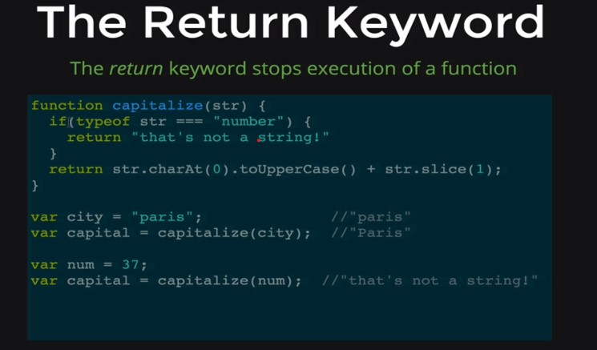
- So in this example, if you put in a number instead of a string, it'll spit back 'that's not a string' and be done, it won't run the second return to capitilize.
-
Return a value from a function
-
Define fuctions that take multiple arguments
-
Define a function without arguments
- It's a 2 step process. First you declare it, and then you call it (run it). You declare the code bucket, and then you put stuff in it later.
- One distinction: if you type doSomething(),it'll execute the function, without the () it'll just refer to it.
- Functions help you dry up your code
- In this you're storing the song in a function, now to repeat it you just have to input the function a few times
-
Define a function with arguments
- What if we wanted a function sing song that could sing a different song? And I wanted to be able to call sing song and tell it which song to sing?
- Arguments are how we can write functions that take inputs
- We're putting the name of the argument in the parentheses
- So when we call this function, we can change what num is and get back the square-pretty cool!
- Arguments make functions super powerful
- Functions can take as many arguments as needed
- If you didn't define one of your arguments, it would spit back 'undefined', it won't break your code
- The ability of functions to take arguments is pretty much the most important part of functions. It's not about repeating twinkle twover and over-it's about writing code and then being able to change it a little.
-
Functions Problem Set
-
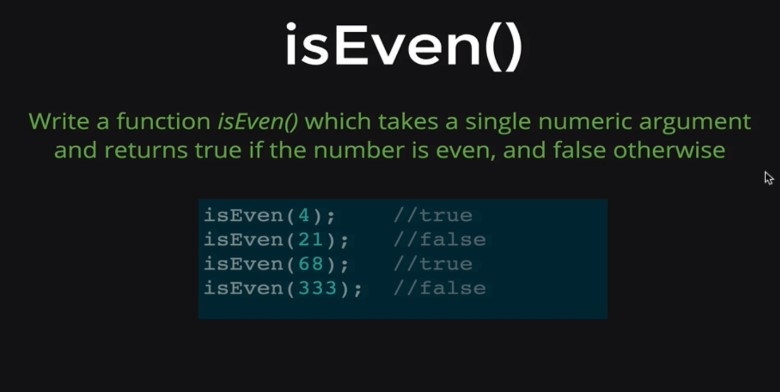 - isEven was pretty straightforward. Note the nifty shortcut!
-
- Factorial-This one was really tricky. First you create the function, and num is going to be the input. Then we define a variable, result, and set it to 1. After that we runa loop that will keep multiplying an ever incresing number until it reaches the number inputted, and then the result is returned. Pretty cool! Also that last solution is an alternate that counts down instead of up.
-
- This one you had to google how to replace a character in a string. Then you just saved the result to a variable, and returned the new variable.
- For the code see functions.html and functions.js
-
-
Define a function without arguments
-
Discuss Scope and High Order Functions
-
Scope
- Wherever we have some codes, let's say it's within a function, that code is running in a specific context. It might have variables, properties. Scope is referring to whichever variables and properties are visible in that function. That could be different inside of another function. Or you might have nested functions with different scopes and variables
- Example: declare a functions doMath
- All doMath does is declare a variable x=40, and then console.log x
- It will just print 40
- Within function x=40
- Outside of the function x is undefined
- We have 2 different scopes: outside of the function, in the global scope, x is undefined. Within the function it is. When we create a function it has its own scope and variables.
- Look, if we do define x in the globabl scope, if we run the function the variable is still 40 within that context:
- Now there is a way to access variables within a function. If we define a variable outside a function, we can use it inside a function-but the opposite is not true:
- Look, here we defined the variable y to be 99. Then we could have our function refer to it and use it. So a function can access outside variables, but you can't access inside function variables outside of the function, this is called child scope.
- Another example. What if we defined y within the function to be 100, but outside in the global scope i's still 99?
- First we declared y to be 99 in the global scope. Then the function declared y to be 100, it changes y. When we print y it stays 99. But when we run doMoreMath it prints 100. Now when we type y again it's now 100. !
- The function didn't just declare a new variable, it took the global declared one and changed it.
- Another example:
- Here you declared the variable within the function with var, so it has no impact on the global one.
- Exercises:
- This will return TRUE. basically you declared num t be 8 in global scope. Then you wrote a function, but did not run it. Then you changed 8 to 9, then you ran the function. The function to 9, added one to it, & checked to see if it's divisible by 5.
- Here we created 2 functions. The first declared the name variable. The second wants to print that variable, but doesn't declare it. If we run the first one, we get rusty, but if we run the second, name hasn't been declared & is undefined. This goes to show that every function has its own scope and they're not shared between functions.
-
Higher Order Functions
- Higher Order Function either take a function as an argument, or return another function (!). Here's an example, setInterval. This will take a function and call that function at a specific interval we provide. It's a way to have something repeat every second or half second. With a loop it just happens immediately.
- First we'll write a function to write Twinkle Twinkle:
- Then we write the interval function:
- First we create set interval & it takes 2 arguments: another function, and an interval. In this case we want it to call sing, every 1000 milliseconds
- That number it spits out (2) we can use to stop it with clearInterval(2).
- Set interval is just one example of a higher order function. A higher order function is one where can pass another function to it as an argument, and we can return another argument.
- There's one other change we could make. Sometimes we want to run some code, every second for instance, but we don't want to define a separate function ahead of time.
- We can do this with an anonymous function:
- It's the same thing as above, but the function is defined in line. We can't call this function again.
- Halfway through Javascript, you can do it!
-
Scope
-
Define and add data to arrays
- 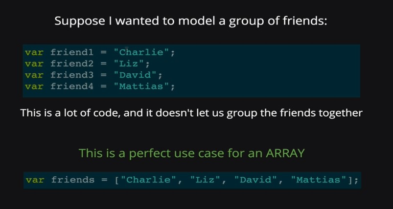
- We can group a list of variables that are not related
- Just like characters in a string, arrays are also indexed starting at 0-so charlie is stored at 0.
- We can use this list to retrieve data at a certain point in the index
- We can also update arrays
- we can add new data in
- you can add a data point, a new one, but you can also change the array, just by setting a certain pt in the index = to something
- We can initialize an array in 2 ways. These 2 are equivalent. Arrays can also hold anything, any type of data.
- They have length too! Just like a string, you're just counting the pieces, it's not indexed.
- See here when you did .length of the array it returned 3, not 2, just like it would in a string. When we retrieve a data piece we do that at an index.
-
Utilize built-in array methods
- Here are a few built in methods
-
push/pop
- Before when we were trying to add a data point at the end of an array, we had to count where the index ends to know where to put it in. Push adds something to the very end of an array
-

- When you push a value in, it'll return what pt of the index we're in (if we were at 5, it'll spit out 6). Pop will remove something from the end of an array, and returns the last item in the array that it removes.
-
shift/unshift
- Shift and Unshift they are similar, but add and remove from the firs item of an array.
- Just note: IT'S OPPOSITE WHAT YOU THINK
- Unshift adds (+)
- Shift removes (-)
-
indexOf
- Takes an argument (string, number) and tries to find that argument in a given array. If it finds it, it returns the index of where it is found
- If it doesn't find the given argument it spits back -1
-
Slice
- Copies parts of an array
- If you're specifying where to make the cuts, the first one is inclusive, the second is not. And it doesn't cut, it just copies.
- You can also copy an entire array by stetting an emptly.slice to a variable
-
Exercises
- Undefined
- Hermione and Harry. Wait, nope, these are nested arrays. So it's going to be "mooney, Wormtail, prongs" "Harry, Ron, Hermione". Nope.
- So it's actually ["Mooney, "Wormtail", "Prongs"] and then ["Mooney"]. friendsGroup[2] returns this list. Then it's basically ["Mooney, "Wormtail", "Prongs"] [0], which is Mooney. So the second one isn't pulling from friendsGroup, it's pulling from the data set we retrieved rom friendGroups.
-
push/pop
- Exercise: Console ToDo List
-
Array Iteration, how we can access every piece in an array, do some code to every item-iterating over a list, an array, looping through that array & doing something with or to that list
-
Use a for loop to iterate over an array
- Ah, okay-so you know how .length will always be one more than []? This for loop takes advantage of that, to get it to print each data piece in the array
-
Use forEach to iterate over an array
- It calls a function for each item, passes each item through it
- If you define a function, then want to put it in a ForEach, make sure you don't pt ().
-
Compare and contrast for loops and for Each
- Big difference: for starts with a number and uses .length, that's abstracted away in forEach
-
Exercises
- If the number's divisible by 3, it will be printed. This one was trying to trick you by naming the function argument and variable color, we're parsing through the numbers array, not the colors.
-
Todo take 2: now with a delete feature
The big thing here is that you cleaned up your while loop with functions. And you used a forEach loopto print todo list. And we introduced the .splice thing that takes away a bit of an array. - If you want the code see list2.html and list2.js
-
Problem Set: if you want the code, see arrayproblems.html and arrayproblems.js
-
- Hint: You'll need a loop
-
- Hint: You'll need a loop, and a variable that keeps track of the first item in the index, and compare that in the loop to the next one, if they're =, and if at any point they're !=, you're done, it returns false
-
- Hint: Use a loop, have a variable called result to store the answer, and constantly add into each time through the loop
-
- Hint: Loop, and a variable that's storing your maximum number, and every time through the loop you'll need to update that variable if the current number in the loop is greater than the old maximum
-
Use a for loop to iterate over an array

-
like arrays, objects are a data structure
-
Understand objects coneptually
- If we wanted to model a single person, with their name, age, and city, an object is a better solution than an array
- Unlike arrays, object have no order, values are just stored under keys
- To retrieve data, we can do 2 things. we can bracket, similar to arrays (only difference is the string inside the [] instead of index number)
- Might be some cases where we'll need to use bracket notation instead of .. If the property starts with a number, or has a space, you'll have to bracket. In addition, brakcets let you lookup using a variable. I don't really understand what that means, but hopefully it'll become more clear.
- We can update data assigned to property by accessing the property and then setting it equal to somehting new.
- We can initialize an object 3 different ways. We can make an empy object with curly braces, then add stuff to it later one piece at a time. We can do it all at once (object literal notation), properties are written w/in the curly braces). Another way you won't see much, you can use the function newObject() set to a variable, and then add properties.
- Objects can hold all data types
-
Compare arrays and objects
-
Arrays are used to store a list of data. Each item is bound to an index, it has a particular order Objects are a gelatinous blob with a bunch of key value pairs floating inside. It's kind of like a dictionary: you look something up based off of a key and you get a corresponding value. Syntax: ["", "", ""] Syntax: { key: "value",} To get data out of an array: To get data out of an object You have to know the index of the data point you want to retrieve, ad put it in [] (it's just a special version of an object) Type the object name, and put the property in quotes in brackets ["property"], or name.property To push just put name.push("new list item"). You have to be specific in where you want the new item to be added, in this case at the end of the list. To push just say name["property"] = new value, or name.property=new value. There's no order, so you don't have to mess with an index. Updating items in an array, we need to find the index of the value we want to change, and reassign it Updating items on an objects, you do a dot, so dog.property, and set it equal to something new. 
- In conclusion: Both arrays and objects use key value pairs, but arrays are a special subset of key value pairs, where the keys are always numbers and they're always in order. An object the key can be anything, and there is no special order.
-
Write code using JS objects
-
-
We can put objects in arrays, and arrays in objects. For exmple, here is a bunch of objects in an array:
- But there's really no stopping, you could add an array within an object within an array:
- 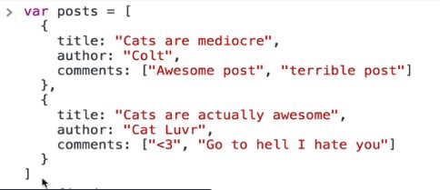
- Now in this example, let's say we want to access the comment "Cats are mediocre", the title of the first post in the array, you would do posts[0] to access the first object in the array, and then posts[0].title. Also notice when you did posts.length you got 2 , there are two pieces, 2 objects, in that array:
- Another example, let's say we wanted to access "Go to hell, I hate you", the second comment in the second object in the array, it would be first posts[1] (remember that's index one, really it's the second object), and then posts[1].comments[1], there's an array within the value comments. Nesting is an important skill!
-
-
Exercises
- In the someObject empty object, both of these are valid wasy of adding key-value pairs. That first one though will make a key _name, not just name.
- The second piece their, var prop is setting just a normal variable, color. someObject[prop] is the proper way to add in a variable as a key & assign a value. The last piece, whie objects can hold any data type, you cannot use the . notation if your key starts with a #, you have to do the other way object["key"]=value.
- someObject.friends[0].name. We had to work our way inwards: 'what is someobject?' object, so. notation. Whats' the next layer? an array. malfoy is in the first one, so it's going to be [0]. What's next? Brackets, so it must be another object, but with only 1 key value pair. That gives us someObject.friends[0].name
- 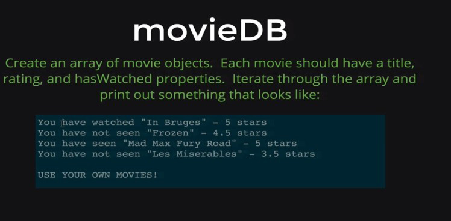
- Here's what you came up with
- Here was his first solution:
- And then how he cleaned it up with a function:
- Both work. You can find the code here, moviedb.html and moviedb.js
-
Adding Methods to objects
- A method is just a function that is property inside of an object. Or rather, a funtion can be added as a value of a key:value pair in an object:
-

- If we wanted to call the function, we would do it like this: obj.add(10,5)
- This is what console.log is-console is an object, and log is a method (a function within an object) of that object
- We'd use methods for many reasons (instead of defining our functions separately), it can help you keep your code organized, so you can group things logically together
- For example, look at this:
- here you defined 2 functions, both named speak-this resulted in a name space collission where you lost the first one (that says woof), and it was overwritten my the meow one. To get around this so we can have 2 functions named speak, we can add each as a method to an object.
- You would add the function to the dogSpeak object like this:
-
The Keyword This
- Sidenote: Underscore.js is a library of functions. What's nifty is that it groups all of the functions under the object (_). See Underscore.js
- The keyword this is tricky, it means different things in different contexts. In one case, it is a way to refer to data within in aobject for a function defined in that object. So for example, here's how we've been doing it, defining an object, and then defining a function in the global window name space:
- To add the function to the object, and to have it take the lit of data from that data property within the object, you'd do it like this:
- Notice that you took out the argument, and you also replaced arr with this.data.
- And then from there you'd access the function like this:
- You made it through Javascript! Wow!!!!!! On to the HTML+CSS+JS combo, now you're going places!
-
-
Define what the DOM is
- A bunch of special js objects, js methods, functions, that we can use to interact with our HTML & CSS
- With the DOM, the HTML is turned into a bunch of JS objects. Each object models one of the elements, tags, in HTML:
- So we load up HTML in the browser, the browser displays things to us, but behind the scenes it actually makes this model of every single element with a js object.
- The entire model is contained within the object 'document'. So everything lives in that big object, document.
-
Understand why DOM Manipulation is awesome
- Here's a cool example, Patatap.com
-
List a few examples of sites that use JS to manipulate the DOM
- Literally any site.
-
Understand the SELECT, then MANIPULATE workflow
-
- Overview
- Just like CSS, where we write a selector & apply styles, with JS we also select elements, and we change properties (manipulate it)
- For our example, we're selcting this h1 'my header', and making it so it's pink
- So here document.querySelector("h1") is going to select the h1, and assign it to the variable h1
- That's the selecting. Manipulating, here you write your variable, h1.style.pink. Style is a property, color is a property. This is a general overview, just focus on the concepts.
- Here's another example:
-
Select
- First to review the DOM: our entire DOM all live inside the document object, it's the root node. Se everything is going to start with document.
- 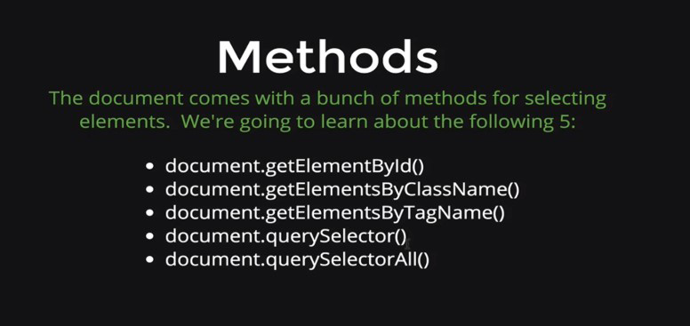
- These 5 methods have all been added in to the document objects, just like in that previous examples where we put a function in an object (remember, a function inside an object is called a method.)
- Look at this demonstration:
- Here is how we would select different pieces of this HTML code. So the first one here, all we're doing here is using document.getElementById.Highlight to select the li with the id of highlight.
- The next one is by classname. Let's say you save it to a variable, it will be a list, it is an HTML collection, an array like thing with objects insides. We can do [0] and .length, but not forEach.
- The next one is get elemtents by tag name
- 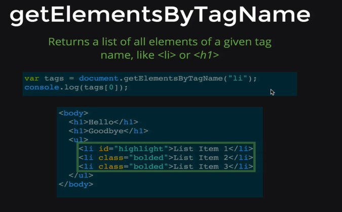
- The next one is different, it takes a CSS style selector. Basically instead of selecting the HTML elements themselves, you can take your already built CSS selectors and use those, yay. But this one will only select the first instance, not all in the document.
- The next one is another query selector, but selects all given instances:
- Exercises:
- var tags=document.getElementbyId("first");
- get element by class won't work, since htere is more than 1, same with tagname. Actually you could do it, you would do it like this: document.getElementsByClassName("special")[0]
- var tags=document.querySelector("p"); It's just your basic CSS element selector, & this will only return the first instance
- var tags=document.querySelector("#first"); This is pretty much the same as the first, you're just using the CSS Id selector
- vartags+document.querySelector("h1 p"); This will select the first p nested in thefirs h1, and just the first instance
-
Manipulate
-
Manipulating style
-
-

- The style property is a huge object with one property for every css property that we could set. We can write js that will style an element differntly than the css.
- The right side must be a string. Here's an example to illustrate, first we have our HTML with this basic webpage:
- We want to change the color and the border of the h1. First we need to selelct it:
- Then we need to manipulate what we've selected. If you just look at h1.style, it's a huge document with ton's of properties. To manipulate it you need to select the specific property you want:
- So here we've selected coor and changed it to yellow, and border and changed it to 5px solid pink. Again note that we had to put it in as a string, this is how you adjust and add properties in a js object.
- Now is this a good idea, setting your style with js instead of cs?
- JS should control the behaivors. What's common is to define a Css class, and then toggle it on or off with JS.
- So here, instead of selecting an ID with JS & changing it and then applying a style, you define a class in CSS with that style you want (.some-class). Then to manipulate the highlight ID, just select it, and then manipulate it with tag.classList.add("some-class");
- A class list is defined in CSS, it's just a read only list, NOT an array.
- YOu can add, remove, or toggle (if the given element has that class already, it will remove it. If it doesn't have that class it will turn it on.)
- Remember that we have to use .add, becasue classlist is not an array.
-
-
Manipulating Text and Content
- First is textContent, it extracts all the text:
- Text content is a little dangerous-if you set it to a new string, it will erase HTML elements within
- The property that fixes this is innerHTML
- Here's an interesting nuance, text content will just treat it as text, inner HTML will recognize the inner html formatiting:
- So in this exampe, for the frist one with just text contenet, the full h1 html notation showed up on the page.
-
Manipulating Attributes
-

- So attribures are the green things in html (see html basics if you need a refresher). get attribute retrieves the value of a sepecific attribute, set attribute changes an attribute value. YOu need 2 arguments, the before and after.
- A demonstration: So virst we're first just selelcting the first image tag, and setting it to a variable. Then we use that variabe (img1), to get attribute,to see what the src link is.
- Then to set that picture to something new, our first argument is the attribute (green in HTML), and the second argument the value we want to set it to.
- 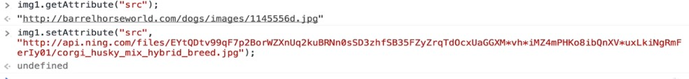
- Sidenote, let's say you did the same thing for an href in an a tag, you changed the link-that filler text that appears will remain unchanged. To fix that do this:
Playing with Google Code Along
-

-
-